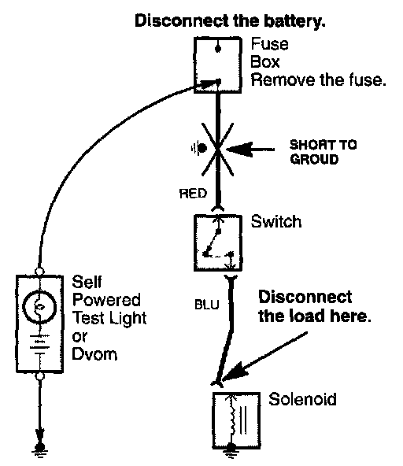

Testing For A Short With A Self-Powered Test Light or DVOM

1. Remove the blown fuse and disconnect the battery and load.
2. Connect one lead of a self-powered test light or Digital Volt/Ohmmeter (DVOM) (switched to the lowest "OHMS" range) to the fuse terminal on the load side.
3. Connect the other lead to a known good ground.
4. Beginning near the fuse box, wiggle the harness. Continue this at convenient points about six inches apart while watching the test light or DVOM.
5. If the self-powered test light goes on or the DVOM displays a low reading or no reading (ZERO), there is a short to ground in the wiring near that point.